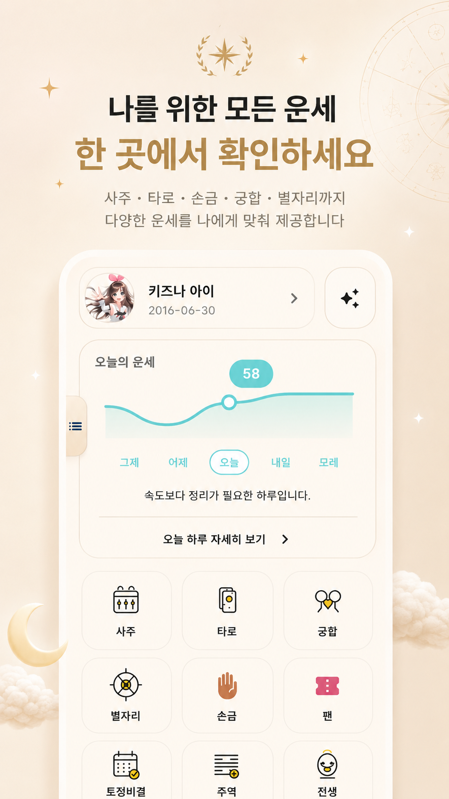
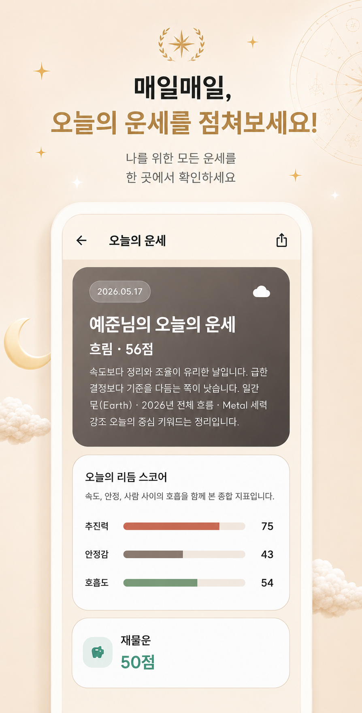
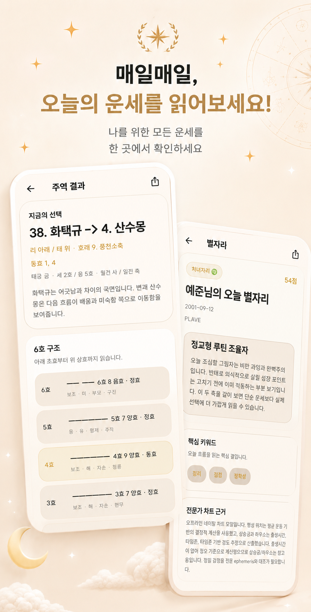
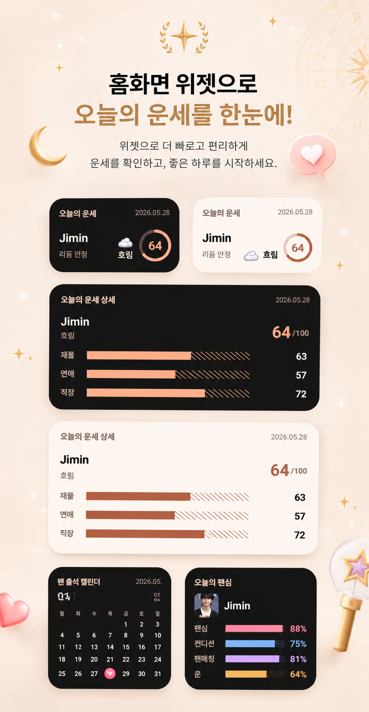

홈과 전체 운세
오늘 운세와 주요 운세 모드를 한 화면에서 확인
Home

운명은 사주, 타로, 손금, 궁합, 별자리, 주역, 전생, 팬심과 오늘의 운세를 나에게 맞춰 확인하는 로컬 우선 운세 앱입니다.




앱과 소개 페이지는 한국어, 영어, 일본어, 중국어, 스페인어, 프랑스어, 독일어, 포르투갈어 표시를 지원합니다.
출생 프로필을 바탕으로 오늘의 흐름과 리듬 점수를 확인합니다.
손금, 별자리, 주역처럼 상황에 맞는 리딩을 골라 봅니다.
두 프로필의 관계 흐름을 비교하고 중요한 포인트를 정리합니다.
팬심 컨디션과 출석 체크, 전생 리딩까지 가볍게 탐색합니다.
프로필, 리딩 기록, 앱 설정은 기본적으로 사용자의 기기 안에 저장됩니다. 손금 등 사진 기반 기능은 사용자가 선택한 경우에만 앱 기능에 사용됩니다.